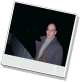

|
Ausstellung der künstler
Exposition de l'artiste Exhibition of the artist Personale dell'artista |
 | ||
| 2002 |
niente è innocente. giovane europa.
a cura di Leonardi R. Galleria V-idea. Genova. Italia. |
Performance pubblica "in vivo" liberamente fotografata e videoripresa. Installazioni e videoriprese di precedenti performance in galleria. | |
| 2001 |
5 isteriche ipercinesi.
a cura di Anderlini A. e Lazzaro P. Galleria San Salvatore. Modena. Italia. |
Performance privata "in vivo" fotografata e videoripresa (pubblico solo su invito della galleria) per la chiusura della mostra "itinerari della memoria". | |
| 2000 |
il tabù (messa in opera di).
la paura (messa in onda di).
a cura di Bonaffini M. Stalker. Modena Italia. |
Performance pubblica "in vivo" liberamente fotografata e videoripresa.
Pubblico liberamente invitato dell'artista. |
|
| 1998 |
il monumento di Damocle
a cura di Capone S. Galleria San Salvatore. Modena. Italia. |
Performance privata, su invito dell'artista, "in vivo" fotografata e videoripresa solo dall'artista. | |
| 1997 |
Italia 1945-1995.
a cura di Frigieri E. e Grandi S. Civica galleria d'arte. Sassuolo (Modena) Italia. |
Installazione e intervento durante le mostre "Art Attacks - Arte nei nuovi media". | |
|
Fabbrica Italiana d'Arte ®
a cura della direzione di Libriamo e Multimediamo Fiera di Modena. Modena. Italia. |
Ipertesto con conferenza pubblica su invito dell'ente Fiera di Modena in concomitanza dell'incontro "L'arte contemporanea fra Reti Globali e Reti Locali" | ||
|
Ipertesto coniugato.
a cura della direzione di Corradini O. Sala Multimediale del Comune di Modena. Italia. |
Performance pubblica con ipertesto, su invito dell'Assessorato alla cultura e Circuito Giovani Artisti Italiani. | ||
| 1995 |
Come pensare l'origine. Cosa sperare di ogni avvenire.
a cura di Moretti S. Chiostri Benedettini di San Pietro. Reggio Emilia. Italia. |
Installazione ambiente, visibile, ma inaccessibile al pubblico. | |
|
Come pensare l'origine. Cosa sperare di ogni avvenire.
a cura di Anderlini A. Galleria Aperta. Modena. Italia. |
Installazione ambiente, in galleria, visibile ma inaccessibile al pubblico.
In mostra normalmente, quadri e disegni. |
||
| 1993 |
ritratto virtuale quale espressione di contemporaneità
.
a cura di Anderlini A. Galleria civica di Mirandola. Mirandola (MO). Italia. |
Installazione ambiente. | |
|
Cuori Solitari
a cura di Capone S. e degli organi direttivi. Centro direzionale COOP Estense. Modena. Italia. |
Installazione, con vendita diretta, su distributori automatici. |